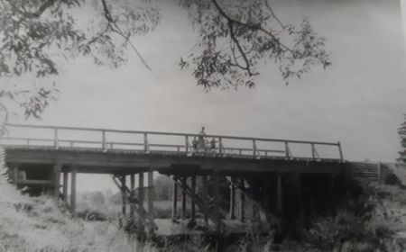

{kind=link}
{kind=link}
{kind=link}
{kind=link}
{kind=link}
{kind=link}
{kind=link}
{kind=link}
{kind=link}
{kind=link}
{kind=link}
{kind=link}
{kind=link}
{kind=link}
{kind=link}
{kind=link}
{kind=link}
{kind=link}
{kind=link}
{kind=link}
{kind=link}
{kind=link}
{kind=link}
{kind=link}

Страницы авторов "Тёмного леса"
Литературный Кисловодск и окрестности
Пишите нам! temnyjles@narod.ru
"Дорогой Степан Богданович, - заговорил посетитель, проницательно улыбаясь, - никакой пирамидон вам не поможет. Следуйте старому мудрому правилу, - лечить подобное подобным. ... Именно, что дело вчера было на Сходне, на даче у автора скетчей Хустова, куда этот Хустов и возил Степу в таксомоторе".
Роман М.А. Булгакова "Мастер и Маргарита" (1928). Глава 7 "Нехорошая квартира", посвященная директору театра "Варьете" Степе Лиходееву
Автор выражает благодарность своему брату Леониду Макарову за ценные замечания и дополнения, сделанные в процессе редактирования рукописи.
Наша дача находится на южной стороне Сходни и за прошедшие годы практически не изменилась. Те же терраски с окнами ромбиком, покрашенные белилами и суриком, зеленый штакетник забора... Сразу за домом начинается сначала пологий, а потом все более крутой спуск в долину реки Горетовки. Только деревья за эти годы сильно разрослись. Липам, посаженным вдоль канавы, теперь уже более 50 лет.
Но сейчас мы вместе с читателями мысленно совершим путешествие во времени на полвека назад и постараемся рассказать, какой была Сходня и наша дачная жизнь на ней в 60-70-х годах. Фотографии в очерках взяты из личного архива автора, а иллюстрации к истории Сходни с сайта pastvu.com
| Современный вид нашей дачи. | |
| Зимняя сказка на нашей улице Гоголя. |
Чтобы сделать дальнейшее повествование более логичным для читателя, нужно начать с истории Сходни. Поселок своим рождением обязан Николаевской (ныне Октябрьской) железной дороге, движение по которой было открыто в 1851 году.
Географическое название "Сходня", как и "Украина", в русском языке обязательно требует предлога "на", а не "в". Этим всегда и отличались коренные жители Сходни от "понаехавших". Они никогда не скажут "в Сходне", а только так - "на Сходне".
| План окрестностей Сходни. Те знаковые места, о которых в дальнейшем пойдет речь, выделены красным цветом. |
По мнению историков, в древности по этой территории проходил "Всходный путь" из Москвы-реки вверх по Сходне, затем, через волок у деревни Черкизово из Сходни в Клязьму, отсюда и название реки. С другой стороны железной дороги протекает вторая река - Горетовка. Долины этих рек, соединяясь, образуют небывалую по красоте излучину, около которой и расположился поселок.
В 1870 году была открыта станция "Сходня", получившая свое название от реки. Интересно, что Сходня, в отличие от рядом расположенных платформ, таких, как Планерная, Подрезково, Фирсановка и Малино всегда имела статус железнодорожной станции. Поэтому, по каким-то ранее установленным железнодорожным правилам, на вокзале существовала касса поездов дальнего следования, хотя сами поезда, естественно, на Сходне не останавливались. В эпоху тотального дефицита, в том числе и на железнодорожные билеты, это позволяло знающим людям не толкаться в центральных московских кассах, а спокойно и без очереди покупать себе билеты на вокзале Сходни.
| Замена деревянного моста через реку Сходню земляной насыпью. Если ехать на электричке из Москвы, то именно с этого места начинается современная Сходня. | |
| Старый вокзал Сходни. |
Здание старого деревянного вокзала на Сходне просуществовало до конца 1990-х годов. Оно было построено в конце XIX века и сохраняло традиционную для железных дорог окраску в бежево-коричневые тона. В настоящее время варварски заменено торговым центром, фасад которого развернут в противоположную от железной дороги сторону.
Во второй половине XIX века земли в районе Сходни стали перекупаться богатыми московскими промышленниками и купцами. С этого времени на территории нынешней Сходни возникают отдельные "летние усадьбы" - прообразы будущих дач. Красивую, лесистую местность, прилегавшую к речке Сходне стали называть "Подмосковной Швейцарией". В 1890 году при станции неподалеку от железной дороги находились шесть "летних усадеб".
В конце XIX и начале XX века земли вокруг станции были поделены на участки и стали продаваться под дачи. Сходня стала популярным дачным местом. На "богатой" северной стороне Сходни начали появляться загородные дома и дачи сильных мира сего.
Среди них была загородная резиденция московского генерал-губернатора В.Ф. Джунковского, представителя купеческой династии П.И. Гучкова, железнодорожного короля Н.К. фон Мекка (сына известной меценатки Надежды Филаретовны фон Мекк, опекавшей Чайковского), потомков дочери А.С. Пушкина - семьи М.А. Гартунг, миллионеров Бажановых, Веденеевых, Подрезковых, Проскуряковых, Дурасовых, заводчиков Глушковых, Шабаровых, Жемочкиных, цветоводов Губониных, конезаводчиков Маринцевых, владельцев торфоразработок Денисовых.
Старожилы до сих пор многие районы Сходни называют по именам бывших владельцев этих дач - Джунковка, Гучковка, а соседняя со Сходней платформа Подрезково даже получила имя от бывшей усадьбы Подрезковых.
Улицы Сходни были прямые и мощеные, что для начала XX века было редкостью. Эти дореволюционные дачи с башенками, резными наличниками, застекленными террасами и большими квадратными участками по 20-40 соток сохранялись вплоть до 90-х годов, когда около станции началось массовое строительство многоэтажных домов.
В 1928 году Сходня приобретает статус дачного поселка, в 1938 году преобразуется в рабочий поселок, а в 1961 году получает статус города с административным подчинением Химкам. В 2004 город Сходня вошла в состав Городского округа Химок как микрорайон, потеряв статус населенного пункта.
В период своего существования в качестве города, Сходня была участником социалистического соревнования городов Подмосковья и соревновалась с другим подмосковным городом Лобней, расположенным по другую сторону от аэропорта Шереметьево, о чем свидетельствовали вывешенные в центре Сходни уличные плакаты. В чем конкретно заключалось это соревнование, как оно сказывалось на жителях и кто из городов в конце концов вышел победителем, история умалчивает.
Как позже выяснилось, в присоединении Сходни в качестве микрорайона к Химкам был тайный и коварный для жителей Сходни умысел. В Химках не хватало свободных площадей, и мощное сообщество тамошних застройщиков остро нуждалось в новых площадках для многоэтажного строительства, что через несколько лет и привело к массовому сносу частных домов на Сходне и началу варварского уничтожения этого некогда красивого и зеленого подмосковного дачного места.
Не помог даже тот факт, что над Сходней проходят трассы взлета и посадки самолетов из Шереметьева, расположенного всего в нескольких километрах и, согласно законам еще советского времени и до сих пор не отмененным, многоэтажное строительство на пути этих трасс категорически запрещено. Тем не менее, даже такая не последняя в нашем мире компания, как Аэрофлот, проиграла иски к администрации Химок, разрешившей строительство. Причем, с каждым приходом нового Химкинского мэра возведение многоэтажек на Сходне не только не прекращалось, но возобновлялось с еще большим размахом и рвением.
Мне всегда было немного обидно за судьбу окружавших Сходню сел и деревень - Усково, Саврасово, Морщихино, Подолино, Жаворонки, Голиково, Лигачево, Черная Грязь. К сожалению, никто и никогда не знал точной их истории.
Ну, может, только за исключением Черной Грязи, находившейся в 30 верстах от Москвы, и о которой упоминал Радищев в своем "Путешествии из Петербурга в Москву". До строительства железной дороги там располагалась почтовая станция и происходила смена лошадей при следовании из Петербурга в Москву и обратно, А ведь все эти деревни были намного древнее Сходни и, возможно, что некоторые из них могли быть основаны даже раньше Москвы. По крайней мере на старинных картах они присутствовали, когда еще никакой Сходни и в помине не было.
Но, как это часто бывает, города развиваются быстрее, а деревни или остаются такими, как были, или исчезают вовсе, особенно в последнее время. Странно еще и то, что на старых картах, вплоть до 20-х годов XX века названия сел и деревень писались не как сейчас с окончанием на "о", а с окончанием на "а" - Саврасова, Ускова и т.д.
| Восстановленный Смоленский храм в селе Подолино. |
До перестройки на Сходне действовал завод радиоэлектронной аппаратуры, стекольный завод, цех галантерейной фабрики "Черемушки", швейная и трикотажная фабрики. Работал крупнейший в Европе мебельный комбинат ММСК-1 (вообще, изготовление мебели на Сходне велось с 1920-х годов). Была своя пекарня, три школы и две бани. Сейчас все предприятия, кроме школ, закрыты.
Дольше всех держалась сходненская баня N2, расположенная в конце нашей улицы Гоголя, но и она сейчас тоже закрыта. Последние годы сходненская администрация сдавала ее в аренду частной компании, но из-за хронической неуплаты налогов и работы с черным налом минуя кассу, договор аренды был расторгнут.
Администрация после этого пыталась снова сдать баню в аренду, но по причине запущенности банного хозяйства и необходимости в связи с этим вложения значительных средств в ее обновление, новых желающих взять на себя бремя помывки местных жителей не нашлось, и баня так и не возобновила свою работу.
Мне же почему-то всегда думалось, что баня, как и почта, библиотека, поликлиника или школа должны по логике входить в число объектов социальной значимости и принадлежать государству. При этом получение прибыли не должно быть их главной целью, а основным показателем их деятельности должно быть обслуживание населения с установкой неких стандартов их присутствия в населенных пунктах, например, одна баня на 10 или 20 тысяч жителей. Впрочем, наверное, администрации все-таки виднее, на то она и администрация.
Первое время после ликвидации комбината некоторые его бывшие и наиболее активные работники по инерции пытались продолжить производство мебели, организовав в цехах несколько мелких кооперативов и используя оставшееся там оборудование. Самым крупным из них было объединение "Сходня-мебель", но и оно достаточно быстро заглохло. Сейчас цеха стоят заброшенными, некоторые из них используются под склады, а в тех, что поближе к улице, открыты магазины, и даже ресторан рядом с бывшим заводоуправлением.
Мои родители купили дачу в 1962 году. Кооператив назывался ДСК "Новая жизнь" и был организован в 1939 году, но наш дом был построен позднее, уже после войны в 1949. До покупки дачи мы два года снимали ее у прежних владельцев - Лившицев. И даже ключи не стали менять. Этими ключами мы пользуемся до сих пор.
Тогда как раз недавно прошла хрущевская денежная реформа 1961 года, и я хорошо помню, как все считали деньги "по старому" и "по новому". А мы, дети, играли дореформенными монетками в 5, 10, 15 и 20 копеек. Монеты достоинством в 1, 2 и 3 копейки продолжали действовать и после реформы, не требовали обмена и, соответственно, сразу же выросли в цене в 10 раз. Я еще думал, насколько мог бы обогатиться человек, который бы все это предвидел заранее и сделал бы огромный запас таких денег. Со временем старые монеты в 1, 2, 3 и 5 копеек, выпущенные до 1961 года стали цениться за то, что были сделаны из "настоящей меди" в отличие от новых монет и, следовательно, помогали излечиванию различного рода ушибов путем их прикладывания к больным местам. На самом деле, скорее всего, они были все-таки бронзовыми.
Перед родителями стояла дилемма: покупать автомобиль, или дачу. Тогда по деньгам это стоило примерно одинаково. Хорошо, что они выбрали дачу. Что бы сейчас было с этим автомобилем, а дача стоит до сих пор. Правда, на целый дом у нас денег не хватило. Дом на Сходне стоил порядка 8 тысяч рублей на новые деньги, и мы купили полдома.
На участке уже росли деревья, посаженные предыдущими хозяевами. Помню, что вишен было два сорта: "Шубинка", которая была кислой на вкус, но отлично шла на приготовление компотов и начинки для вареников на зиму и "Владимирка" со сладкими плодами, пригодными для еды прямо с дерева.
Да и зрительно эти два сорта вишневых деревьев отличались. Шубинки, как правило, росли вверх, а Владимирки были более низкорослыми и раскидистыми. При созревании ягод нужно было собирать их достаточно быстро из-за конкуренции со стороны скворцов, которые целыми стаями садились на вишневые деревья и быстренько объедали их "под корень".
Яблони были тоже нескольких сортов - зимний сорт "Пепин-Шафран" с относительно небольшими красно-зелеными яблочками, среднеспелый сорт "Штрифель" с крупными и более зелеными плодами и традиционная для дач зимняя "Антоновка". В конце участка около ворот росла "Дикая яблоня". Скорее всего она произошла от того же Штрифеля, так как изначально имела три ствола, один привитой, и два диких, начавших расти от корня. Потом привитой ствол засох, и остались только два диких. Несмотря на свою "дикость", яблоня давала вполне съедобные яблоки с очень необычным вкусом, который мне чрезвычайно нравился. Единственным их недостатком являлась невозможность консервации.
Помню, как-то раз мама все-таки решила закатать яблоки с дикарки в банки и сделать из них компот, но через некоторое время яблоки начали бродить, а банки взрываться. Недалеко от этой яблони была посажена сосна, которая со временем сильно разрослась и стала затенять яблоню. Но, в силу своей "дикости" яблоня не смирилась с этим, и тоже стала расти вверх. Мы еще шутили, что она "устроила соревнование с сосной". Эта яблоня жива до сих пор, как и два Штрифеля и Антоновка. К сожалению, все "Пепины" со временем засохли, а жаль, яблочки на них могли долго храниться и были на удивление сочные и вкусные!
| "Дикая яблоня", соревнующаяся с сосной. Из двух стволов, бывших когда-то, остался только один, но не уступающий соседней сосне по высоте. От второго растет новый побег. |
Слева от дома стояли два крупных куста желтой смородины. Именно желто-розоватой, а не красной. Я любил есть ягоды с них, собирая в кружку и обильно пересыпая слой за слоем сахарным песком. Около сарая были терновники. В отличие от слив плоды терновника не продолговатые, а круглые и маленькие, но съедобные, если это не дикий терновник, а культурный.
Созревали терновники к концу сентября и в основном шли на варенье. По какой-то причине уже в относительно недавнее время на терновники напал непонятный мор, и они стали по очереди засыхать, причем, не только старые деревья, но и молодые, растущие от корней. Как известно, сливы и терновники размножаются не косточками, а корневым методом. Сейчас от былого изобилия терновников около сарая остались только засохшие стволы, которые используются нами для подвязки малины.
Первое время на участке сохранялся и кусочек "дикой природы", представленный несколькими кустами ольхи и волчьей ягоды, под которыми росли лесные папоротники. К сожалению, исходя из соображений прагматичности, эти кусты были вырублены и заменены черной рябиной, плоды которой шли на приготовление домашнего вина. А папоротники сохранились, размножились и в итоге стали расти повсюду. Ландыши мы принесли из леса сами, и, так как они не боятся тени, то тоже заняли значительные пространства участка.
Как и всякий собственный дом, наша дача постоянно требовала ремонта и реконструкции. Еще при родителях крыша из дранки была заменена на шиферную, проведен газ, сделан новый фундамент и погреб под домом, заменен забор. В те времена на Сходне было много мастеровых людей, которые с охотой брались за дополнительную работу. Как ловко, словно по волшебству, у них все получалось! Помню стекольщика, который вставлял нам стекла на террасе, выбитые хулиганами зимой, плотников, построивших забор и калитку, каменщиков, сделавших фундамент и жестянщиков, переложивших крышу и сделавших водостоки. Их дождевые трубы работают до сих пор.
Со временем племя этих тружеников повывелось. "Последним из могикан" той старой школы сходненских мастеровых людей был, наверное, Николай Петрович, к которому мы обращались за помощью по ремонту дачи в начале 90-х годов. Было ему уже около 70 лет, но он продолжал работать на комбинате по обслуживанию систем вентиляции. Жил он в частном доме недалеко от нас. И, несмотря на свой возраст, абсолютно не боясь высоты, перекрыл заново нашу терраску железом и спилил засохшую иву у калитки.
В связи с тем, что найти толковых мастеров на Сходне с годами становилось все труднее, а также из-за увеличения собственного свободного времени, вызванного постепенным развалом нашего НИИ, я в середине 90-х сам перехватил инициативу и уже самостоятельно построил душ, новый сарай и забор. Скорость при этом, конечно, была не та, но постройками этими я горжусь до сих пор.
В 2000-е отыскать местных строителей стало уже практически невозможно. Им на смену пришли "бригады", состоящие из начальника более-менее презентабельного вида, говорящего по-русски, ведущего переговоры с дачниками и добывающего новые заказы, и непосредственно исполнителей из гастарбайтеров. Наиболее известным в нашей округе таким бригадиром был Уткир, выходец из Средней Азии, постоянно живший на Сходне и организовывавший сезонные работы для своих соплеменников.
К сожалению, повывелись не только строители, но и насекомые, обитавшие на Сходне. В 60-е годы их было немерено. Тогда мы редко пользовались вторым этажом, но, если случалось туда подняться, то нас встречал рой гудящих мух на верхней террасе. Приходилось или открывать окно террасы, чтобы их выпустить, или в виде развлечения стараться перебить их свернутой газетой. На нижнем этаже водились сине-фиолетовые красивые жуки с длинными усами, ползавшие по фанерным стенам комнат. Не факт, но возможно, что они питались древесиной и с этой точки зрения наносили некоторый вред нашему дому, но уж до чего были хороши! На участке на цветах можно было встретить бронзовых жуков, а по переулку в начале лета летали майские.
Повсюду попадались жужелицы, кусачие сороконожки, шилохвосты, бабочки самой разной окраски, красные и черные муравьи, шмели, красавицы-стрекозы. В кустах малины водились травяные клопы. Они любили сидеть на ягодах и, если их не заметить и, потянувшись за малинкой, до них дотронуться, то они начинали страшно вонять, а ягода становилась непригодной к употреблению.
Еще в малине можно было встретить очень крупных, длиной с палец, зеленых кузнечиков, которые в августе по вечерам начинали громко стрекотать. Они были практически неразличимы на фоне листьев, и, чтобы их увидеть, приходилось приближаться к ним на звуки их стрекотанья крайне осторожно, так как при малейшем шорохе они надолго прекращали свои песни.
От былого великолепия в настоящее время почти ничего не осталось. Даже комары и те практически исчезли. Правда, год назад я случайно наткнулся на гнездо земляных ос на нашем участке, которых уже давно не было видно. Мы их случайно потревожили, когда пилили засохшую рябину
Полностью вымерли ежики, мало осталось синиц и воробьев. На смену им пришло огромное количество ворон, любящих сидеть на разросшихся на нашем участке березах, каркающих и периодически ворующих сухой корм у кошек. Вдоль участка растут еще и липы, посаженные родителями и соразмерные по высоте с березами, но по какой-то, только им ведомой причине, вороны предпочитают сидеть именно на березах.
Развитие инженерной мысли привело к повсеместной замене на Сходне оголенных проводов на изолированные провода в оплетке, что позволило пропускать их через деревья, не опасаясь короткого замыкания. В 60-х годах были только оголенные провода, и наши деревья порой лишались своих верхушек или боковых веток из-за спиливаний, проводимых электриками.
Хотя, если следовать логике по которой Сходня, как это было объявлено в начале XX века, по-прежнему остается "Подмосковной Швейцарией", то, как и в настоящей Швейцарии, столбов с проводами вообще не должно было бы быть, а только подземные электрические кабели, не портящие окружающий "швейцарский" пейзаж. Но провода, хоть и в изоляции, по-прежнему тянутся от столба к столбу и опутывают все улицы. Мы все настолько привыкли к их виду, что, наверное, если на самом деле на Сходне был бы внедрен "швейцарский вариант" электрификации, то это привело бы к безвозвратной потере привычного сходненским обитателям вида уличного пространства.
| Вороны, сидящие на разросшихся березах нашего участка и ждущие момента, когда мы уйдем в дом, чтобы склевать кошачий корм около крыльца. Посередине фотографии виден подвод электричества к даче. |
Нашими непосредственными соседями по дому была семья Г.. Глава семейства до этого занимал какую-то административную должность в Казахстане и купил свою половину впрок. Поэтому первые несколько лет мы соседей не видели. Зато у моего папы было довольно много знакомых, так как часть дач нашего кооператива была распределена через НИИ, в котором он работал.
Очень хорошо помню Михаила Петровича Ковалева, главного конструктора НИИ Технологии машиностроения и его жену Наталью. Правда, почему-то все их называли "Михал Петров и Ната". Это был очень колоритный и добрый человечище, который всегда старался помочь соседям, и кое-кого даже устроил к себе на работу, в том числе и вашего покорного слугу.
| Михал Петров и Ната Ковалевы у калитки своего дома. |
Еще одним сотрудником НИИ был Готлиб Готлибович Гессе, из русских немцев. Каким-то чудом он не попал под репрессии, и даже во время войны продолжал работать в этом НИИ в эвакуации. Говорят, был очень знающим специалистом. Неудивительно, что, как у всякого немца, его дача была в полном и идеальном порядке. Даже забор, хотя и деревянный, простоял на удивление долго, был ровным и не покосившимся, пережил еще двух хозяев и сгнил буквально недавно. Когда мне купили велосипед "Орленок", я ходил к нему накачивать шины автомобильным насосом.
Иногда он нам отдавал растения, которые ему были не нужны, и мы их сажали на нашем участке. Но, как говорила моя мама, растения эти, как правило, оказывались каждый раз какими-то странными. Крыжовник был с толстой шкуркой, колючками и маленькими плодами. Мне он, правда, всегда нравился. Жасмин, в отличие от своих сородичей, рос не в ширину, а в высоту, и цвел намного позднее. Он у нас растет до сих пор под названием "Готлибовский жасмин".
| "Готлибовский жасмин" зимой. Под тяжестью снега ветки, растущие обычно вверх, опустились, и их пришлось подпереть палками. |
Еще у него была двадцать первая ВОЛГА. Он ее страшно берег и ездил крайне медленно, со скоростью не более 20 км/час. Впрочем, в связи с отсутствием в ту пору какого-либо серьезного уличного движения, особых затруднений другим водителям своей ездой не чинил. Помню об этом, потому что один раз он предложил подвезти нас до станции, и мы могли наблюдать из окна автомобиля эту его неторопливую езду по улице им. Чапаева, являвшейся главной дорожной артерией южной части Сходни
Через переулок напротив жили Соловьевы. Дед Соловьев дачу получил за то, что был высококлассным паркетчиком и укладывал по слухам паркет прямо в Кремле. У него было четверо детей, что даже по тогдашним меркам было немало.
Правда, один его сын, Коля, еще в детстве перестал расти и оставался маленького роста. Но, несмотря на свой рост, Коля отличался большим оптимизмом и мастерством на все руки. Был и отличным сапожником, и резчиком по дереву, чинил нам велосипеды, обильно смазывая заднюю втулку и повторяя: "Солидол - это клей".
Мы с братом сначала, когда только у нас появились велосипеды "Орленок", не знали, что тормозные колодки задней втулки ни в коем случае нельзя смазывать жидким маслом. Они при этом начинают проскальзывать и перестают тормозить. Да и подшипники втулки лучше смазывать густой смазкой из солидола. У нас его первое время не было, а у Коли, как более опытного человека, был большой запас, и мы этим пользовались.
Дед Соловьев не только построил дом, вырастил детей, посадил деревья, но и вырыл колодец, что по тем временам было почти подвигом. Купить стройматериалы было трудно, почти невозможно, и кольца для колодца отливались вручную. Копали колодец всей семьей, причем чаще других вниз спускался именно Коля, которому, благодаря его маленькому росту, работать было сподручнее, а руки у него были на удивление сильные.
Колодец находился на краю участка, но Соловьевы открыли его для всеобщего пользования, так как было известно, что чем больше людей пользуется колодцем, тем он чище за счет ускорения водообмена и постоянного притока свежей воды.
| Тот самый колодец. |
Через некоторое время Коле выдали, как инвалиду, голубой автомобильчик с двигателем от мотоцикла и круглыми лупоглазыми фарами. Все, наверное, помнят такую инвалидную коляску по фильму "Операция Ы". Единственная разница была в том, что Леонид Гайдай взял для съемок автомобиль с открытым верхом, чтобы поместить в него всех героев своего фильма, а у Коли был с крышей. Надо было видеть Колю, когда этот автомобиль привезли на платформе грузовика к нему домой, а он сидел внутри него, улыбался от радости и гордости, делая вид, что рулит. Автомобиль хранился в специально построенном для него сарае, ужасно тарахтел и выпускал клубы едкого дыма по причине мотоциклетного двигателя, но, тем не менее, исправно ездил.
Еще Соловьевы всегда держали собак и котов. Собаки жили в конуре перед домом на цепи. Все их поколения носили одну и ту же кличку - Тюльпан и, наверное, из-за того, что вечно сидели на привязи, были злыми и облаивали всех прохожих. Помню, как один из этих Тюльпанов случайно отвязался и от радости начал, как бешеный, носиться по переулку туда и обратно, пока с превеликим трудом не был пойман и водворен на место. Коты тоже носили одинаковые имена - все они были Барсиками.
На другой стороне улицы Гоголя, чуть наискосок, жили Плюхины. Они, в отличие от нас, дачников, были постоянными жителями Сходни. Говорили, что дед Плюхин имел немного цыганской крови, поэтому все представители Плюхиных по мужской линии были чернявы и отличались твердостью характера.
Они тоже всегда держали котов, причем эти коты выбирались одной масти - серые в полоску и носили, как и у Соловьевых, одно и то же, но другое имя - Пушок, и, как и их хозяева, имели весьма независимый характер. В разговорах об этих котах сами Плюхины проявляли некоторую непоследовательность. С одной стороны они утверждали, что коты, особенно летом, должны сами искать себе пропитание, с другой же стороны уверяли, что кормят их "одними коклетками". Помню, как один из этих котов, проявляя незаурядные способности в части добывания этого самого пропитания, научился лапой открывать крышки кастрюль и сковородок. За этим занятием он и был застукан однажды на нашей террасе, откуда затем с позором вытурен.
Напротив нас жили Лопуховы. Основатель рода работал заместителем министра лесной промышленности РСФСР и, наверное, это была самая состоятельная семья. Его зять был полковником военной медицины и у него был автомобиль "ВОЛГА ГАЗ-21", точно такой же", как в фильме "Берегись автомобиля" с оленем на капоте. Таким образом, на всей нашей улице Гоголя были только два владельца легковых автомобилей - Гессе, о котором говорилось выше, и зять Лопухова.
Сейчас практически у всех жителей нашей улицы есть автомобили, а то и по два-три на семью. Что удивительно, эта лопуховская ВОЛГА до сих пор жива, и стоит у них в гараже. Несколько лет назад они выкатывали и даже заводили ее, хотя на ней уже давно никто и никуда не ездит и она, скорее всего, представляет собой интерес только для любителей ретро. На ней сохранился даже старый регистрационный номер - черный с маленькими белыми цифрами и буквами.
Но, несмотря на такой статус, у Лопуховых была только половина дачи, хотя участок был соток двадцать, с прудиком и скважиной около него. Сверху на трубе скважины был привинчен ручной насос и, чтобы набрать воды, нужно было его с довольно большим усилием и скрипом качать. После нескольких качков из носика начинала литься вода. Еще носик имел крючок, на который вешалось ведро для набора воды.
Дед Лопухов засадил весь участок деревьями. Там были лиственницы, липы, ели, пирамидальные тополя, рябины, ирги и еще какие-то экзотические породы, а около крыльца рос развесистый фамильный лопух. Со временем деревья разрослись настолько, что затенили весь участок, и следующие поколения семьи занимались тем, что периодически их укорачивали и вырубали, пока не уничтожили большую часть посадок, но несколько лиственниц и елей сохранились.
Другая половина дома принадлежала так называемым "Татаркам". Это были две уже пожилые сестры, которые не вышли замуж и доживали свой век на Сходне. По легенде, в 20-е годы они работали в Кремле и лично знали товарища Ленина. Правда, потом выяснилось, что работали они все-таки в газетном киоске около Кремля и как-то один раз издали и вправду видели вождя мировой революции, куда-то спешившего по своим делам.
Потом эта половина дома была продана Х.. Х. был знаменит тем, что намного опередил свое время и начал заниматься бизнесом еще в ту пору, когда это было строжайше запрещено. Первый раз он был обвинен еще в 70-е годы в присвоении стройотрядовских денег, потом несколько раз привлекался за спекуляцию иконами и валютой. Но, что удивительно, несмотря на значительные сроки, к которым он приговаривался, уже примерно через год, а то и раньше, он снова возвращался и продолжал жить на Сходне.
Расцвет его деятельности наступил после перестройки, когда то, чем он всю жизнь занимался, из сферы криминала перекочевало в сферу уважаемых обществом занятий. С братом они открыли банк, но, чтобы иметь возможность носить оружие, а это было необходимо в период накопления первоначального капитала, оформились в своем же собственном банке охранниками.
|Еще нужно рассказать о "Палатке". Она стоит в начале нашей улицы Гоголя на большом перекрестке, от которого отходят в разные стороны 9 улиц. Если это место сравнивать с Парижем, то его аналогом будет площадь "Звезды". Поэтому лучшей точки для размещения магазина придумать было просто невозможно. Пусть даже это место и было кем-то выбрано при "проклятом социализме".
| Палатка незадолго до окончательного своего закрытия и перепрофилирования в "Пятерочку". На вывеске написано "КООП. Продукты". |
Своим названием "Палатка" обязана действительно существовавшей деревянной палатке бледно-голубого цвета, которая располагалась на этом месте в 60-е годы. Потом деревянное строение было заменено на кирпичный магазин, а позже здание магазина расширено и обито сайдингом.
У палатки останавливались ЗИЛы с большими прицепами, возившими готовую мебель с комбината. К кассирше, расталкивая очередь из местных теток, пролезали за водкой наглые шоферы. В дни получки в "Палатке" отоваривались водкой и пешие работники комбината. Некоторые из них потом шли по улице Гоголя, доходили до нашей дачи, устраивались в канаве и требовали стакан, так как пить водку из горла считали для себя неприличным.
| Граненый водочный стакан, отдаваемый в аренду работникам комбината в дни получки. |
Как правило, чтобы не ввязываться по пустякам в местные конфликты, мама выносила им граненый стакан, припасенный специально для таких случаев, а потом забирала его обратно до следующего дня получки или аванса на комбинате. Этот стакан до сих пор хранится в буфете нашей дачи.
Торговля в "Палатке" всегда велась не государством, а Химкинской райпотребкооперацией. И лишь в недавнее время эта потребкооперация, не выдержав конкуренции с сетевой торговлей, сдала помещения в аренду, и теперь там располагается магазин "Пятерочка". Но знающие люди на вопрос: "Куда идешь?" по старой привычке продолжают отвечать: "В палатку, за продуктами".
Вернемся к нашим соседям. Мы рассказали о Татарках, лично знавших Ильича. Но список знаменитых жителей улицы Гоголя может быть продолжен. В следующем доме за ними жили Д.. Одно время они держали коров и продавали молоко. В те времена это не было редкостью. Коров, коз, свиней, куриц и другую домашнюю живность держали многие жители Сходни. Соловьевы постоянно держали несколько куриц, возглавляемых петухом, которые свободно паслись в переулке.
Пока наши соседи Г. не вернулись из Казахстана, они года два сдавали свою половину. Наши временные соседи тоже держали кур, но по какой-то причине не хотели их выгуливать в переулке, куда выходил их участок, а попросили сделать проход через нашу территорию. С этой целью, чтобы куры не разбежались, а строго следовали в заданном направлении на улицу Гоголя, они прислонили к нашему забору откуда-то принесенные секции еще одного деревянного забора. Таким образом, получился узкий проход, по которому курицы, кудахтая и хлопая крыльями, шествовали на свою прогулку, а потом возвращались домой, чтобы порадовать своих хозяев свежеснесенными яичками. Сейчас уже плохо помню, но, по-моему, этот "куропровод" со временем все-таки был убран с нашего участка и направлен в сторону переулка.
Как-то моя мама купила у Д. молоко, но оно оказалось слишком сильно снятым, и в дальнейшем она от него отказалась, и мы брали молоко у других хозяев. Правда, Д. уверяла, что вообще не снимает молоко, хотя на Сходне всем было хорошо известно, что любые владельцы коров обязательно это делают, но в разумных пределах. Еще Д. почему-то утверждала, что во время войны руководила всем партизанским движением Белоруссии, и за это получила от государства свой участок, что вызывало некоторые сомнения у соседей.
Хотя сама раздача участков тогда была нормальным явлением. Чуть дальше по улице жили Хомские. Они действительно получили от государства участок, но не за оказанные стране услуги, а, наоборот, в виде компенсации за несправедливые в их отношении репрессии с последующей реабилитацией. Моя мама это точно знала от самой Хомской, которая уже в достаточно зрелом возрасте решила научиться играть на пианино и брала у нее уроки музыки.
Еще дальше по улице почти напротив друг друга жили два горьких пьяницы, постоянные жители Сходни - Васька и Степан. Их дома имели довольно неприглядный вид и представляли собой скорее обычные деревенские избы в три окошка с традиционным мезонином на крыше, украшенным незатейливой резьбой. А участки, в отличие от наших дачных, на которых было много деревьев и цветов, были почти полностью отданы под картошку.
Интересно, что мы в разговорах между собой всех соседей всегда называли по фамилии первых владельцев, хотя вторые и последующие их поколения могли, особенно, по причине выхода женских представительниц их семейств замуж, поменять свои фамилии и, действительно, меняли. Но для нас они по-прежнему оставались Ковалевыми, Соловьевыми, Лопуховыми и т.д.
Были и более удаленные соседи, которые являлись нам в виде проходивших мимо колоритных и странноватых личностей. Из них запомнилась сумасшедшая Варя. Всегда в черном халате, громко разговаривающая сама с собой. Ее боялись. И быстро идущий, шумно дышащий и вечно задыхающийся мужчина с красно-фиолетовым лицом, раздутыми ноздрями и бешеными глазами. Его дыхание было слышно за квартал. Его люто ненавидели все собаки, заранее встречая и провожая бешеным лаем. Он отвечал им такой же злобой и ненавистью, ударяя по заборам ветками деревьев или палкой. Мы его тоже побаивались.
Как уже говорилось, Сходня стоит на высоком холме около слияния двух рек - Сходни и Горетовки. Их долины весьма живописны и значительны по размерам. В те времена, когда мы только купили дачу, если стоять наверху и смотреть вдаль, то взору открывалось безбрежное море зелени из лесов и полей, тянущееся на многие километры.
К сожалению, в настоящее время пейзаж сильно изменился, и не в лучшую сторону, благодаря торчащим тут и там многоэтажным домам Сходни и Подрезкова, а также коттеджам, выросшим, словно грибы после дождя, на бывших колхозных полях. Но даже и теперь кое-что от былого великолепия еще осталось.
| Мостик через Горетовку. |
Вопрос образования этих долин, как и возникновения долин всех рек на планете также спорен, как и вечный вопрос о курице и яйце. То ли реки, в свое время очень полноводные, прорыли эти глубокие долины, то ли долины всегда существовали, представляя из себя природные складки земли, а реки просто стали течь там, где вода находила себе места пониже. Но почему тогда долины не прерываются, а тянутся и тянутся на сотни километров, пока та или иная река не впадет в соответствующее море? Впрочем, наверное, препятствия для рек все же время от времени возникают, и тогда в этих местах мы можем наблюдать возникновение озер.
| Вид на Сходню со стороны Горетовки. 60-е годы. На заднем плане хорошо просматривается водонапорная башня комбината и пирамидальные тополя на участке Лопухова. |
Хотя, все равно, вопросов остается больше, чем ответов на них. Ведь если, например, лить воду на землю, то сколько ее не прольется, она вся уходит в почву. Но тогда и любой ручеек, выйдя на поверхность, должен под действием силы тяжести через некоторое время уйти под землю, и реки в принципе не должны появляться и тем более течь сотни и тысячи километров, оставаясь на поверхности. Как, впрочем и озера, и моря с океанами. Вода ведь просачивается через малейшие трещинки, это мы знаем. Поэтому вся вода на планете должна была бы, найдя соответствующие трещины в земной коре, просочиться внутрь Земли, затем дойти до расплавленной магмы ядра и взорваться с огромной силой, превращаясь в пар и разрушая бедняжку-планету. Но этого почему-то не происходит. Почему?
В южной части Сходни, спускающейся к Горетовке, было четыре оврага. В двух из них, что покрупнее, били родники. Эти родники живы до сих пор, и, несмотря на деятельность человека, вода в них достаточно чистая и пригодная для питья. Около родников, еще с давних пор, были сделаны запруды и образовались небольшие, но очень красивые пруды. По крайней мере, когда мы приехали на Сходню, эти пруды уже были.
В нашем пруду, который был на соседней от нас улице, водились маленькие рыбки, которых мы называли "верхоплавками". Дело в том, что эти рыбки действительно плавали около самой поверхности воды. В качестве наживки для их ловли можно было использовать обычный хлебный мякиш. Хозяйственного значения такая ловля не имела, поэтому этих рыбок мы потом или отпускали обратно в пруд, или помещали в старую ванну, стоявшую под вишней и служившую на участке для сбора воды и последующего полива огородных растений.
| Ближайший к нашей даче пруд с родником. Около родника растет большая ива, на которую до сих пор с удовольствием лазят окрестные детишки. |
Одно время в нашей ванне жил карась, уже не помню, откуда взявшийся, и которого мы кормили дождевыми червями, специально накопанными по такому случаю. Жил он почти все лето, а потом торжественно был отловлен из ванны, перенесен в банке и выпущен на волю в пруд.
Спускаясь к реке, овраг становился не таким глубоким, берега более пологими и на них располагались участки. Таким образом, у некоторых жителей Сходни был свой собственный ручей. Я им всегда завидовал. Мне казалось великим счастьем иметь на даче ручей. Ведь при желании его можно было опять запрудить и сделать свой собственный пруд. Хотя, возможно, те жители, у которых этот ручей по участкам протекал, не в полной мере осознавали всю степень своего богатства.
Еще в пруду можно было пускать кораблики. В "Детском мире" тогда продавались наборы конструктора для сборки самоходных катеров с винтом, работающим от батарейки. Если все правильно собрать, то такой катер мог довольно хорошо плавать. Пустив его с одного берега пруда, нужно было бежать на противоположный, чтобы там поймать и снова пустить в плавание. Помню, один раз катер заглох по какой-то причине посередине пруда, и чтобы его достать, пришлось кидать в воду комья земли с травой, создавая тем самым волну, которая, в конце концов, и прибила его к берегу.
Кроме катеров, мы сами делали модели различных судов. В качестве подручных материалов, кроме дерева, использовался пенопласт, который мы привозили со свалки. О свалке чуть позже. Со временем технология изготовления судов совершенствовалась, и ее верхом стало создание моделей из фанеры. При этом каркас выпиливался и склеивался из многослойной фанеры, а корпус обшивался однослойной, потом шпаклевался, зачищался шкуркой и красился.
Около Горетовки на противоположном берегу был еще один родник. По легенде, в 1941 году до этого места дошли немцы и два фрица там замерзли. Сейчас трудно сказать, было ли это правдой или только вымыслом местных жителей. Но, что было точно правдой, так это многочисленные остатки укреплений времен Отечественной войны. По-видимому, планировалась круговая оборона Сходни, так как она была окружена со всех сторон противотанковыми рвами. На другом берегу Горетовки в кустах хорошо просматривались два ряда рвов. Такие же рвы были около санатория Мцыри. Там же за мостом валялся бетонный колпак дота. А на лугу, что вел из Сходни к лесу, было вырыто углубление с бруствером под две противотанковые пушки и окопами перед ним.
Со временем в этом углублении образовалось болотце, и при желании можно было даже найти немного клюквы. Мы с братом каждый раз, когда с мамой шли в лес, забегали на это болото. Оно поросло толстым слоем болотного мха. Под ногами мох сильно продавливался, болотная жижа при каждом шаге чавкала, и запросто можно было промочить ноги, о чем нас и предупреждала наша мама. Но желание найти клюкву пересиливало страх намочить ноги.
|
| Панорама дороги в лес от болотца. На лугу росли три столетних раскидистых дуба. Мы всегда под ними отдыхали. Они живы до сих пор. Сейчас часть луга застроена коттеджами и один из дубов попал на чей-то участок. |
Походы в лес были регулярными. В те времена лес не был загажен многочисленными следами жарки шашлыков, пластиковыми пакетами и бутылками. Уже в самом его начале около первой полянки можно было, кроме сыроежек, найти белые грибы, подберезовики и подосиновики. У каждого из нас была своя корзинка, и мы считали, сколько "благородных" грибов" нашли. В сумме иногда доходило до сотни и больше. Сыроежки и свинушки шли на жарку с картошкой, а "благородные" грибы и лисички наша мама мариновала на зиму. Получалось божественно вкусно, и я до сих пор люблю не соленые, а именно маринованные грибы. К сожалению, тот мамин старинный рецепт маринада сейчас безвозвратно утерян.
Недалеко от опушки при входе в лес была полянка с круглой ямой, в которой никогда не пересыхала вода. Скорее всего, это была воронка от разорвавшейся во время войны бомбы. Там водились болотные растения, лягушки, головастики, пиявки, жуки-плывунцы и водомерки, свободно бегающие по поверхности воды, а вокруг летали стрекозы. Рядом с этим прудиком рос кривой дуб, на который мы с братом всегда лазили, это входило в нашу дачную традицию.
| Кривой дуб. Сейчас через поляну проложили лесную дорогу, по которой вывозят засохшие в 2010 году от короеда стволы елей. Позднее я много раз пытался найти этот дуб, но так и не смог. |
Если идти вдоль опушки леса примерно с километр, то можно было наткнуться на огромный гладкий серый валун размером примерно 5 на 2,5 метра. Интересно, что даже в самую жаркую погоду его поверхность сохраняла прохладу. И меня всегда интересовал вопрос, как он вообще попал в лес. Но он там был, и мы всегда делали на нем привал.
Мама доставала припасенную фляжку с водой и давала нам попить. У фляжки была завинчивающаяся крышка, а на ней колпачок, который можно было использовать как стаканчик. Мы с братом по очереди пили эту воду, дожидаясь, когда освободится стаканчик, и не было ничего вкусней той воды из фляжки после долгого похода по лесу и собирания грибов! В настоящее время эта часть леса огорожена и по какой-то причине стала собственностью частного фермерского хозяйства "Сходня". В последний раз я видел валун лет 20 назад, когда еще не было забора и к нему можно было свободно пройти.
Еще в лесу была сторожка лесника. К ней вела от деревни Жаворонки проселочная дорога, вдоль которой шли столбы с электрическими проводами. Мы туда старались не ходить, потому что можно было нарваться на злых непривязанных собак, да и сам лесник, как нам казалось, был дик, разнуздан и не очень любил людей. После проведенных уже в эпоху Медведева реформ, институт лесничества в стране был ликвидирован в целях экономии. Функции слежения и ухода за лесом возложили на местную администрацию.
Сходненское лесничество было закрыто, несколько лет заброшенный дом лесника стоял пустой, потом, как это часто бывает, загорелся, а, скорее всего, был подожжен. Сейчас бывшая поляна лесничества постепенно зарастает лесом, но можно еще увидеть несколько одичавших яблонь, засохший колодец и кучу обгоревших бревен на месте дома лесника.
| Поляна, где было Сходненское лесничество. |
В детстве лес казался мне бесконечным и тянущимся в длину вдоль железной дороги и реки Горетовки от Химок до Ленинграда. В ширину же он был пройден довольно скоро, и оказалось, что он с противоположного края все-таки ограничен Пятницким шоссе. Правда, за шоссе лес начинался снова, но туда мы уже не ходили.
Удар по Сходненскому лесу был нанесен со стороны, с которой, как всегда, его меньше всего ждали. После засухи 2010 года на него напал жук-короед. Этот жук ел не все деревья подряд, а только ели. Но, так как лес вокруг Сходни был в основном еловым, то через пару лет образовались огромные пораженные жуком участки. И, почему-то, если обычные засохшие в лесу деревья стоят в таком виде довольно долго, то деревья, съеденные жуком, очень быстро сгнивали и падали, образовывая многочисленные практически непроходимые завалы, наподобие средневековых засек против печенегов и половцев.
В конце концов, подмосковными властями было принято судьбоносное решение о сплошной вырубке таких участков. Было обещано, что на месте вырубок будут посажены новые еловые и сосновые леса. Причем в своих выступлениях губернатор Московской области неоднократно всех заверял, что сам лично будет принимать участие в таких посадках. Но, как часто бывает с благими намерениями, была выполнена только их первая часть.
В результате в лес были направлены бригады лесорубов, которые производили тотальную рубку зараженных участков, стволы вывозили, а сучья жгли на месте. Лес наполнился шумом бензопил, запахом и дымом костров, а когда-то заросшие и тихие лесные просеки были разъезжены до глубокой колеи из-за прохода по ним тяжелой автотехники, вывозившей хлысты спиленных елей.
Несмотря на то, что с засухи прошло почти 10 лет, рубки продолжаются до сих пор, в основном в зимний период. Этой зимой мы с сыном видели еще несколько таких новых участков сплошной рубки в нашем лесу.
Еще одной напастью, поразившей Сходненский лес, было появление в нем квадрациклистов, которые со страшным шумом, бензиновой вонью, включенными фарами и выпученными глазами стали носиться по просекам, утопая в грязи, оставленной лесовозами. Возможно, что в своем воображении им чудилось участие в африканских сафари, а может быть, это было простое человеческое желание хоть как-то использовать купленную непонятно зачем и простаивающую на дачных участках дорогую заморскую технику.
Обязательно нужно рассказать о такой нашей дачной страсти, как езда на велосипедах. В отличие от современных квадрациклов, велосипед не создавал шума, представляя из себя экологически чистый вид транспорта, развивал физическую силу и выносливость седока, и был реальным другом и помощником по открыванию окружающего мира.
Когда мы впервые приехали на дачу, у нас с братом были детские велосипеды. Кто из читателей постарше, наверняка, хорошо их помнит. Их продавали трехколесными с возможностью переделать в двухколесные, когда ребенок научится держать равновесие. Затем, по мере взросления детей, им покупался велосипед "Школьник", а потом чуть больший "Орленок". Нам с братом, минуя этап "Школьника", сразу купили "Орленки".
А когда я закончил 9-й класс, мне приобрели взрослый велосипед. Такие велосипеды были двух типов - так называемые "Дорожные" и "Спортивные". Ближайшие к нам велосипедные магазины были в Химках и Зеленограде. Среди дорожных велосипедов лучшим считался велосипед "Прогресс". Но в тот момент по причине дефицита ни в Химках, ни в Зеленограде вообще не было в продаже велосипедов, и мне купили в Солнечногорске велосипед производства Жуковского велозавода.
| "Дорожный" велосипед. На ходу с 1972 года. Производство Жуковского велозавода. |
В магазине оставался всего один экземпляр со спущенной задней шиной, но мы его все равно купили. Как потом выяснилось, шина была в двух местах проколота. И мы ее уже на даче заклеили. Это было в 1972 году. Этот велосипед у меня до сих пор.
Правда, в начале 2000-х годов я заменил у него всю ходовую часть - переднюю и заднюю втулки, цепь и педали. В тот момент советские велосипеды уже перестали выпускать, всюду продавали китайские или европейские модели, но запчасти к старым велосипедам еще можно было найти. Самый большой рынок запчастей был около велосипедного магазина в Сокольниках. Там я и отоварился, справедливо опасаясь, что через пару лет и запчастей на советские модели уже не достанешь. Благодаря этому мудрому с моей стороны решению я до сих пор катаюсь на своем любимом велосипеде из эпохи моего детства и юности.
Расскажу поподробнее о велосипедных поездках. Сначала на детских велосипедах мы совершали с братом круизы вокруг нашего дачного квартала или вместе с мамой до магазина. Потом на "Орленках" мы ездили уже по всем улицам и окрестностям Сходни, до свалки или до санатория "Мцыри".
На взрослых велосипедах можно было отправляться в дальние походы. Тем более что в те годы движения автомобилей почти не было. Конечно, такие магистрали, как Ленинградское шоссе, и тогда были заполнены автомобилями и опасны для велосипедистов, чего не скажешь о местных дорогах. Они были практически пусты, и это давало нам полную свободу перемещений.
Мы освоили Новосходненское шоссе, которое вело из Сходни в Химки с заездом на велокольцо в Новогорске, ближайшие к Сходне Рогачевское и Пятницкое шоссе, а также все тропинки вдоль Октябрьской железной дороги и многочисленные проселочные дороги рядом со Сходней. Из дальних поездок вспоминаются маршруты по Пятницкому шоссе до Солнечногорска и Рогачевскому шоссе до Дмитрова, а это около 30-40 километров в один конец.
К сожалению, после перестройки велосипедное пространство стало стремительно сжиматься как шагреневая кожа из-за возросшего количества автомобилей. Некогда пустынные Пятницкое и Рогачевское шоссе заполнились табунами несущихся в обе стороны автомобилей, что делало езду по ним крайне неприятным и опасным занятием. Да и окружающий ландшафт сильно поменялся.
В Советское время дачные поселки возникали около железнодорожных платформ, так как электрички для большинства дачников были единственным транспортным средством, позволяющим добраться до своих "фазенд". Но благодаря всеобщей автомобилизации москвичи очень скоро стали осваивать новые пространства вдали от железных дорог, в результате чего все деревни, да и даже луга вдоль моих любимых дорог оказались застроенными. Я, как-то уже на автомобиле, проехал по Пятницкому шоссе и с большим трудом узнавал некогда привычные для меня деревенские пейзажи.
Еще некоторое время последним доступным нам велосипедным маршрутом оставалась лесная дорога из Сходни до Фирсановки и обратно на Сходню через бывшую свалку. Но, в связи со строительством огромного жилого массива "Велтон парк - Новая Сходня" на месте свалки и прокладкой нового шоссе с эстакадой через Фирсановский лес, и этот последний велосипедный путь канул в вечность. В настоящее время на даче для велосипедных прогулок остался лишь небольшой участок дорог вдоль Горетовки с заездом в соседние деревни Голиково, Жаворонки и Подолино.
Как свидетельствует история, мебельное производство на Сходне началось с небольшой мастерской, открытой в 20-х годах прошлого века. Когда мы купили дачу, уже был построен и работал на полную мощность Московский мебельно-строительный комбинат "ММСК-1".
| Сходня. Заводоуправление "ММСК-1". Уже лет 15 как комбинат закрыт и не работает. |
Это было, как с гордостью сообщалось, крупнейшее подобное предприятие в Европе. Наверное, самой популярной его продукцией были раскладные диваны, бывшие тогда практически во всех квартирах и домах граждан Советского Союза.
Но комбинат делал еще много чего. В частности, пианино "Лира". Печальную известность эти музыкальные инструменты приобрели после выхода в свет посвященного им "Фитиля" Сергея Михалкова. Дело в том, что, как оказалось, пианино клепали из невысохшей древесины, вследствие чего они рассыхались в процессе эксплуатации и не подлежали никакой настройке.
У нас на даче из продукции комбината сохранились две трехногие табуретки. Причем одну мы купили в магазине, а другую подобрали на комбинатовской свалке. В отличие от пианино табуретки оказались крайне живучими и служат нам до сих пор.
| Трехногая табуретка. Образец продукции мебельного комбината. |
Свалка комбината - это особая песня. Она располагалась за комбинатом недалеко от деревни Саврасово. Туда свозились все отходы производства, а их было немало. Так как среди отходов было много древесных обрезков, стружки, лаков и т.д., то свалка постоянно горела и дымилась. Иногда дым от нее доходил даже до домов Сходни, что уж говорить о бедных обывателях деревни Саврасово. Дым, впрочем, шел не только от свалки. На комбинате было две трубы - повыше и пониже. Та, что пониже, постоянно коптила черным мазутным дымом, так что даже соседняя с ней высокая труба вся была в копоти.
На свалке вечно кружились мелкие и назойливые мушки, которым дым был нипочем. По четвергам приезжал с завода Лавочкина в Химках самосвал с мрачноватым шофером и охранником. Сгружали магниевый лом и жгли его, не подпуская ребятню, а когда уезжали, то пацаны плескали в костер воду и получался взрыв.
Была от свалки для жителей и великая польза. На свалке постоянно дежурили профессионалы, которые проводили там все свое свободное время, регулярно набирая себе дров на отопительный сезон, а также собирая другую очень важную для домашнего хозяйства продукцию. Работали они следующим образом. Как только к свалке подъезжал очередной самосвал с "мусором", они устремлялись к нему, чтобы из вываленной кучи первыми вытянуть самое ценное.
До драк дело, как правило, не доходило, но, конечно, определенную шустрость и смекалку при этом нужно было проявлять постоянно. Гораздо большую опасность для нас представляла местная шпана из Саврасова. Как-то раз они пристали к нам с братом и отобрали у нас, как они его называли "семейный" ключ (самый большой универсальный ключ, позволявший завинчивать разных размеров гайки на велосипеде), и хранившийся у одного из нас в подсумке. С тех пор мы перестали возить с собой велосипедные ключи и хранили их только дома. Я и сейчас никогда не вожу с собой ключи, когда катаюсь на велосипеде - "Все мы из детства!".
Мы ездили на свалку на велосипедах довольно часто и привозили оттуда квадратные лакированные дощечки, которые использовали как кухонные подставки под горячие кастрюли и сковородки, шпаклевку, шкурку, куски пенопласта и доски.
В советское время материалы не очень-то экономились. Шкурка на комбинате использовалась для зачистки различных деревянных поверхностей и после недолгой работы выбрасывалась целыми рулонами. Иногда достаточно было небольшого следа на шкурке, чтобы ее выкинули. На самом деле, она была еще вполне пригодна для дальнейшего использования. Мы натаскали себе такое количество этой шкурки, что я ею пользуюсь до сих пор и ни разу за всю жизнь не купил шкурку в магазине.
| Шкурка со свалки ММСК-1 мелкой, средней и крупной зернистости.
Кухонные подставки для кастрюль и сковородок. ДСП, фанера, лаковое покрытие. |
Помимо положительного экономического эффекта от деятельности комбината в виде свалки, были, конечно, и отрицательные проявления его присутствия на Сходне. К ним, в первую очередь, можно отнести превращение Сходни из старинного дачного поселка в город. Комбинат постоянно нуждался в многочисленных рабочих руках, и, естественно, начал жилищное строительство.
Еще в начале 60-х годов было построено несколько трех- и пятиэтажных домов вдоль Первомайской улицы в северной части Сходни и четыре пятиэтажки вдоль улицы Чапаева в нашей южной части, а также детский сад, ясли, школа и поликлиника. С левой стороны улицы Чапаева был заложен городской парк, как потом выяснилось, им. Величко. Кто такой был этот Величко, наверное, мало кто знает и вряд ли ответит. К сожалению, я тоже тогда не знал, а сейчас мог бы посмотреть в интернете, но специально не стал этого делать. Пусть название парка останется для меня и читателей маленькой сходненской загадкой!
Деревья в парке не сажались, а сеялись несколькими полосами с промежутками между ними. Это были березы. Первое время, когда они были еще маленькими, они росли очень густо. Сейчас березы в результате естественной эволюции проредились сами собой, но по-прежнему растут не ровными рядами, характерными для искусственных посадок, а как в лесу, случайным образом.
Строительство пятиэтажек, хоть и контрастировало с дачными районами, но еще не наносило значительного урона окружающему ландшафту, так как со временем вид на них был скрыт за разросшимися деревьями и они не были видны с противоположного берега реки и от леса.
В семидесятые годы строительство было продолжено, но уже строились 12-этажные блочные дома. Хорошо, правда, что они возводились на открытом пространстве за парком рядом с деревней Морщихино. Частные дома и дачи не трогались. Новостройки подключались к водопроводу, проложенному от водонапорной башни на территории комбината по ряду улиц. Слив отходов шел в канализацию, собиравшую нечистоты в очистном сооружении за городом и сливались в Горетовку ниже Сходни.
На тех улицах, где под землей был проложен водопровод, были установлены водоразборные колонки, обслуживавшие частный сектор и просуществовавшие до 90-х годов. Ликвидированы они были, скорее всего, из-за возникшего в эпоху капитализма вопроса "А кто платить будет?". Ведь получалось, что каждый желающий мог свободно подойти и набрать воды бесплатно, а это, безусловно, вносило ненужную путаницу в вопрос строгого контроля и учета каждого кубометра воды, стоимость которого при таком свободном пользовании колонками безнадежно растворялась в ведрах несознательных граждан.
Короче говоря, колонки были быстренько убраны, но на этом беды людей, живших на улицах, где они до этого стояли, не закончились. На наличие водопровода и канализации обратили внимание частные застройщики и, естественно, они стали стараться получать разрешения на многоэтажное строительство именно там, где эти системы уже существовали. Ну, на самом деле, не заниматься же прокладкой новых коммуникаций, когда на учете каждая копеечка будущей прибыли. А советская система водоснабжения имела, как оказалось, огромный потенциал, что позволяло подключать и подключать все новые и новые многоэтажные комплексы к уже существующим коммуникациям.
Единственным обременением при этом строительстве были частные дома, которые правдой и неправдой нужно было снести, что и было сделано. Нашему ДСК "Новая жизнь" в этом отношении сильно повезло, но не из-за того, что застройщики были добры и питали какие-то особо теплые и отеческие чувства к дачным кооперативам, а потому что под нашими улицами в советское время никаких коммуникаций никто не прокладывал.
Еще существовала легенда, что в свое время властями решался вопрос о выводе нечистот из Зеленограда, большого города-спутника Москвы, расположенного дальше Сходни по Ленинградскому направлению. И, вроде, подмосковные власти отказались принять эти нечистоты, и тогда решили проложить канализационный коллектор, который соединил бы Зеленоград с Москвой. И, якобы рыли его закрытым способом, как метро, и, вроде, прорыли, и соединили. Но после перестройки не стали использовать и забросили, и сейчас никто не помнит толком, где он проходит, но знающие люди то ведают, и некоторые из них тайно и незаконно к нему подсоединились и сливают в него свои канализационные отходы. А куда все это дальше девается, тоже никто не знает. Вот такая странноватая и диковатая история...
Нужно рассказать и про местные сходненские автобусы. Для удобства своих работников комбинат пустил по нашей части Сходни круговой маршрут служебных автобусов. Это были "ПАЗики". У них, вместо номера маршрута, как у всех нормальных городских автобусов, была надпись "ММСК-1". Для работников комбината проезд был бесплатный, но этими автобусами могли пользоваться и все остальные жители Сходни. Для них была установлена стандартная плата в размере 5 копеек. На своем пути автобусы делали несколько остановок.
Как-то, идя со станции с покупками, моя мама для быстроты и удобства решила доехать на таком автобусе до нашей "Палатки". Но когда она вошла в автобус, один из ехавших там работников комбината, ее увидевший, стал громко настаивать, что не нужно платить за проезд. Аргумент был убийственный: "Не смей тратить свой трудовой пятак!". Мы в семье еще долго вспоминали эту его фразу, и со временем она стала крылатой.
Когда мы купили дачу, то узнали от соседей, что недалеко от Сходни есть одно замечательное и красивое место под названием "Санаторий Мцыри". В качестве ориентира было сказано, что идти туда нужно все время вверх по течению речки Горетовки примерно с три километра. И вот в один из погожих дней мы отправились на поиски. Это было не очень сложно: вдоль реки шли или тропинки, или грунтовые дороги.
| По пути в "Мцыри". Поваленная ива около Горетовки. |
Места были очень красивые. Берега Горетовки заросли ольхой и черемухой, а иногда попадались огромные кривоватые ивы. В воздухе стоял ни с чем не сравнимый запах луговой травы. Первым населенным пунктом, который нам повстречался, была деревня Подолино. Сама деревня располагалась на другом берегу реки, и мы туда не стали заворачивать.
А на нашем берегу стояла куриная ферма, которую я до сих пор отчетливо помню, и вот по какой причине. Это было длинное одноэтажное белое здание, вокруг которого располагался вытоптанный курами двор, огороженный высокой изгородью, чтобы птицы не разбежались. Но сами куры! Их было много, и все они были ужасно тощие и уже изначально синюшные. При виде людей они устремлялись к изгороди, наверное, в надежде, что их покормят.
За фермой было поле, а потом кустарник, пройдя который мы увидели дорогу и мост через Горетовку. Это и было то место, куда нам нужно было прийти. В санатории в те времена проходили реабилитацию туберкулезные больные.
| Живописная дорога, ведущая от железнодорожной станции Фирсановка к Мцыри. Еще долгое время под асфальтом можно было видеть первоначальное дорожное покрытие из булыжников. |
Для них специально держали табун лошадей, так как считалось, что кумыс очень помогает при этой болезни. Конюшня, где содержали лошадей, была старинная и представляла собой круглое здание, колонны которого были выложены из кирпича, а промежутки забраны побеленными бревнами с маленькими окошечками.
|  | Старый деревянный мост через речку Горетовку, ведущий к усадьбе. В настоящее время заменен на железобетонный. |
Сам санаторий располагался в нескольких корпусах тоже старинных зданий с колоннами, от которых вниз к пруду вела лестница, выложенная разнокалиберным камнем и обсаженная лиственницами. Рядом с корпусами был глубокий овраг с родником и тремя тоже старинными и частично разрушенными каменными мостиками. Вся территория находилась в огромном парке, больше похожем на часть продолжающегося за парком леса.
Уже потом я узнал, что санаторий "Мцыри" своим названием обязан М.Ю. Лермонтову, так как был создан на базе старинной усадьбы "Середниково", бывшем имении Столыпиных конца XVIII - начала XIX века, которые были в ближайшем родстве с семьей Лермонтовых.
Генерал-майор Дмитрий Алексеевич Столыпин, купивший имение в 1825 году, был родным братом бабушки М.Ю. Лермонтова Е.А. Арсеньевой. После его смерти Елизавета Алексеевна стала владелицей имения. Сюда поэт вместе с бабушкой в 1829-1832 приезжал на летние каникулы. Здесь Лермонтов впервые влюбился, писал юношеские стихи, читал, переводил.
В 1855 году владельцем усадьбы стал Аркадий Дмитриевич Столыпин. Здесь в 60-е годы XIX века прошло детство будущего государственного деятеля Петра Аркадьевича Столыпина, наверное, наиболее нам известного представителя рода Столыпиных.
В 1869 году имение купил московский купец 1-й гильдии Иван Григорьевич Фирсанов. После смерти Ивана Фирсанова имением владела его дочь Вера Ивановна. В гости к высокообразованной Вере Ивановне, любительнице и ценительнице искусства, приезжали певец Федор Шаляпин, композитор Сергей Рахманинов, художники Константин Юон и Валентин Серов.
В.И. Фирсанова вообще была довольно известной в Москве личностью. Она владела Сандуновскими банями и открыла Петровский пассаж. Одна из первых в Москве активно внедряла электрическое освещение и построила свою собственную электростанцию. Во время торжественных мероприятий в Москве, посвященных празднованию 300-летия дома Романовых, московские власти, из-за нехватки мощностей, были вынуждены обратиться к ней с просьбой об использовании ее электрической станции для освещения Большого театра.
Своим именем усадьба была обязана расположенному рядом селу Середниково, от которого к середине XX века оставался только старинный храм Святителя Алексия, основанный в XVII веке, вокруг которого располагалось сельское кладбище. В настоящее время рядом с храмом вырос, правда, не очень большой, коттеджный поселок. Да и кладбище увеличилось, заняв соседнее поле и почти дойдя до границ усадьбы.
| Храм Святителя Алексия в селе Середниково. Основан в 1693 году. |
Наверное, из-за "намоленности" древнего храма, он пользуется большой популярностью у местных жителей, и, как рассказывают его служители, никогда не закрывался в период советской власти, продолжая работать даже в годы войны и сталинско-хрущевских гонений на церковь. Благодаря этому храм сохранил несколько весьма древних и почитаемых икон.
В начале XX века Фирсанова продала земли около железной дороги под строительство дач, в результате чего возник поселок Фирсановка с одноименной платформой. И, несмотря на желание новых властей искоренять любую память о проклятом буржуазном прошлом, поселок при Советской власти не был переименован и все эти годы хранил память о своей прошлой владелице.
После революции усадьба была национализирована. В августе 1919 года не обошел ее внимание и побывал в ней сам вождь мирового пролетариата В.И. Ленин. В 1925 году в Середникове был открыт санаторий для нервных больных. В 1946 году на территории усадьбы разместился противотуберкулезный санаторий "Мцыри".
В 1992 году усадьба была передана в аренду на 49 лет ассоциации "Лермонтовское наследие", возглавляемой потомком поэта по линии его двоюродного брата М.Ю. Лермонтовым (полным тезкой). Сам новоиспеченный М.Ю. Лермонтов в своих интервью утверждал, что до этого работал простым радиоинженером, и, чтобы восстановить усадьбу, продал чуть ли не единственную свою ценную вещь в виде старого запорожца. На самом деле, благодаря присутствию санатория, все здания и хозяйственные постройки усадьбы все эти годы сохранялись в довольно приличном состоянии, включая даже оригинальные интерьеры главного корпуса усадьбы.
Затем, чтобы содержать усадьбу, он начал сдавать ее в аренду под различные торжества, свадьбы и игру в пейнтбол. На территории усадьбы снимались многочисленные фильмы и телесериалы. Среди них: "Черный монах" (1988), "Бедная Настя" (2003-2004), "Закрытая школа", "Слуга государев" (2005), "Адмиралъ" (2008) "Любовь за любовь" (2012), "Дом на краю леса" (2016) и "Секта" (2019).
Правда, из других источников следовало, что новый владелец усадьбы к Лермонтову не имел никакого отношения, а просто взял себе такой псевдоним, сам работал чиновником в Министерстве культуры, и, пользуясь административным ресурсом, оформил аренду усадьбы на себя с правом ее последующего выкупа. Как это часто бывает, истина в нашем случае осталась и остается покрытой мраком неизвестности...
Но, тем не менее, санаторий был постепенно закрыт. Хотя, если верить статистике, количество туберкулезных больных в стране со времен Советского Союза не только не уменьшилось, но даже увеличилось. А, может, в эпоху демократии туберкулезные пациенты уже не так остро нуждаются в последующем санаторном восстановлении своего здоровья и поправляют его, просто вдыхая сладкий воздух свободы по месту своего основного пребывания?
Сначала были освобождены главные корпуса, а в бывших оранжереях и подсобных помещениях пациенты-туберкулезники еще некоторое время продолжали оздоравливаться и, по слухам, размещались чуть ли не на двухъярусных кроватях. Потом "Лермонтов" выдавил их и оттуда. Санаторий полностью был ликвидирован, территория огорожена высоким металлическим забором. Мостик, соединявший усадьбу с противоположным берегом, на котором располагалась деревня Лигачево, разобран, а за вход стали брать плату в 100 рублей.
Все эти действия новоявленного владельца вызвали справедливый гнев жителей многочисленных населенных пунктов, окружавших усадьбу. Во-первых, они привыкли бесплатно купаться в мцыринском пруду. Это было одно из немногих мест в округе, приспособленных для купания. А какая же дачная жизнь может быть без летнего купания на природе? Еще одним местом для купания было Форелевое хозяйство, расположенное ниже слияния речек Сходни и Горетовки, но до него от Мцыри примерно 5 километров и не всем было удобно туда добираться.
Во-вторых, они всегда брали из мцыринского родника ключевую воду. Часто даже выстраивалась небольшая очередь за ней. Приходили и из соседней деревни Лигачево, когда еще жив был мостик. А "Лермонтов" и эту возможность теперь перекрыл. Гневу народному не было предела и люди стали периодически проделывать дырки в заборе, чтобы, как и раньше, пользоваться водными ресурсами, принадлежащими им по Конституции бесплатно.
Помню такую историю. Как-то я тоже приехал за водой с канистрами и прошел к роднику через дырку в заборе. Одновременно туда подошел какой-то местный мужичок. Разговорились. Он представился жителем Лигачева и заявил, что является потомком Столыпиных. Правда, был слегка навеселе. Рассказал следующую историю. По его словам, в свое время один из Столыпиных влюбился в красивую крестьянку из Лигачева, и она родила ему незаконного сына. В благодарность барин построил ей шикарный дом в деревне и открыл земскую школу. Кстати, здание этой бывшей школы из красного кирпича сохранилось до наших дней.
И, якобы, этот мужичок около родника и являлся прямым потомком той самой крестьянки, и, следовательно, имел все неотъемлемые права на имение. В доказательство он стал раздавать свои визитки, на которых было написано "ИП Столыпин". Правда, фамилия самого мужичка была совсем другая, какая, сейчас уже не помню.
Затем он стал жаловаться на "Лермонтова". Говорил, что тот велел своим охранникам близко его не подпускать к барскому дому по причине того, что де злоумышляет он много чего нехорошего. Говорил, что он всем еще покажет и докажет, выкупит луг напротив имения, заасфальтирует его, сделает там платную автомобильную стоянку для посетителей усадьбы и разбогатеет так же, как самозванец "Лермонтов", ну и так далее.
Вот такая современная династическая распря "Лермонтовых" и "Столыпиных" в эпоху глобальной приватизации. А ведь в XIX веке, судя по историческим хроникам, оба семейства жили очень даже дружно!
Один или два раза за лето мимо наших дач проезжал старьевщик на телеге с лошадью. Около наших соседей Жуковых всегда была огромная непересыхающая лужа, в которой телега старьевщика вязла почти по ступицу. В основном он собирал старые тряпки. Сдавались они на вес. За сданное тряпье можно было получить деньги, но главным призом для нас, мальчишек, был пугач. Это был блестящий, сделанный из металла пистолет. В отличие от пластмассовых поделок, продававшихся в "Детском мире", по внешнему виду и форме он очень напоминал настоящий.
Уж не знаю, где старьевщики их доставали, но они стреляли пробками на веревочке на довольно приличное расстояние. При желании веревочку можно было и отрезать. В этом случае дальность стрельбы значительно увеличивалась, но возникали трудности с поисками улетевшей пули.
Еще одним развлечением, связанным со стрельбой, были стеклянные трубочки. На другой стороне Сходни при въезде в город со стороны Черной грязи находился Стекольный завод, который для каких-то химических целей производил в больших количествах эти самые трубочки. Затем их везли на станцию и грузили в товарные вагоны для отправки. При этом часть трубочек терялась и падала на землю.
| Стекольный завод на Сходне. В настоящее время закрыт и не работает. |
И, если пойти на товарную станцию, и как следует поискать, то можно было найти достаточно хорошо сохранившиеся куски этих трубочек. Задача была в том, чтобы подобрать трубочку, у которой остался хотя бы один оригинальный ровный конец, который можно было бы засунуть в рот, не боясь пораниться. А дальше, дело техники - горох или бузина, которые с нужной скоростью летели во врагов изо рта обладателя волшебного оружия.
Нашу дачную компанию нельзя было назвать большой. Она состояла из детишек соседних домов. Наш дом стоял на углу улицы Гоголя и Нового переулка. Никакого твердого покрытия на проезжей части улиц в то время не было. Улица Гоголя была главной. Каждый проезд автомобиля по ней был событием, и мы всегда выходили поглазеть, что за машина и куда по ней едет.
Весной и осенью грязь была такой, что застревали даже грузовые машины. Я помню один год, когда в начале июня мы выехали на дачу на грузовом такси, потому что надо было везти какие-то громоздкие вещи из Москвы, но машина не могла подъехать к нашему дому из-за разбитой дороги и остановилась метрах в ста. Все вещи пришлось таскать на себе. Хорошо, что мой отец, как начальник отдела в своем НИИ, прихватил с собой двух сотрудников в помощь, которые и перенесли весь наш скарб.
По переулку автомобили вообще практически не ездили. На нем были две узкие земляные колеи, а все вокруг поросло травой и мелким клевером с белыми цветочками, что давало нам, детям, полную возможность использовать это пространство для наших игр. Единственной реальной опасностью был куриный помет от соловьевских кур, также гулявших по переулку, и в который можно было вляпаться по неосторожности.
Итак, компания наша состояла из меня и моего брата Лёни, который был старше меня на один год, из соседских детей Соловьевых - Сережи и Тани, старше нас на 1 и 3 года и из соседских мальчишек Вити и Сережи Плюхиных. Витя был младше нас на 1 год, а Сережа Плюхин был самым старшим и поэтому играл с нами редко.
В основном игры были следующие:
1) "Жопки" - все играющие сидят на земле, облокотившись на локти и выставив вперед ноги, одна на другой. Задача ведущего - попасть мячом им по попе, или другим частям тела. Удары по ногам не считаются. Задача играющих - отбить ногами мяч как можно дальше. Ведущий должен каждый раз кидать мяч с того места, куда его отбили. Если ведущий правильно попадает в игрока, или ловит руками отбитый мяч, то он становится играющим, а проигравший - ведущим.
2) "Сыщик, ищи вора" - всем раздаются карточки с вариантами, кем они будут в игре - вором, сыщиком, судьей, или свидетелями. Причем, никто не показывает, какая карточка ему досталась. Задача сыщика, глядя в глаза других игроков, или пользуясь интуицией, определить, кто из них является вором. Если угадал - наказывают вора, если нет - сыщика. Меру и степень наказания устанавливает судья - это могут быть поджопники, саечки, расстрел мячом по попе и другие меры воздействия. Так как на тот момент мы все уже учились в начальных классах, кроме Вити Плюхина, которому было 6 лет, и он не знал букв, то специально для него на каждой карточке, кроме названия персонажа, приходилось еще размещать соответствующий рисунок.
3) "Городки" - да, мы играли в самые настоящие городки, для чего на земле рисовался квадрат, где выкладывались соответствующие городошные фигуры, выпиленные из круглых палок. Биты были также сделаны из палок. Побеждал тот, кто быстрее разобьет все фигуры.
Сейчас все наши дачные улицы заасфальтированы, включая и переулок. От былого травяного великолепия остались лишь узкие полоски газонов вдоль заборов. Но и заборы сильно изменились, и на смену аккуратненькому зеленому штакетнику почти повсеместно пришли глухие высокие заборы из гофрированного железа, за которыми совершенно скрыта для посторонних глаз личная жизнь новых поколений сходненских дачников.
На Сходне было две керосиновых лавки. Одна около станции за товарными путями. Нам, чтобы туда попасть, надо было пойти на станцию от нашей дачи примерно полтора километра, затем перейти через пешеходный мост над железной дорогой и потом идти мимо товарных складов.
Около станции долгое время сохранялась дореволюционная застройка торговыми лавками и магазинами. На противоположной стороне Сходни на вокзальной площади стоял двухэтажный деревянный промтоварный магазин с каким-то особым, только ему свойственным, запахом. Еще помню одноэтажный продуктовый "Железнодорожный" магазин. Своим названием он был обязан тому факту, что принадлежал железнодорожному ведомству.
На нашей стороне был двухэтажный дом с кирпичным низом и деревянным верхом, представлявший из себя типичную купеческую дореволюционную постройку. В наше время на его первом этаже располагалось сходненское отделение почты.
Важнейшим центром торговли в те времена, конечно, являлся сходненский рынок. Его ряды располагались под открытым небом и там торговали "настоящие крестьяне" из окрестных деревень, у которых можно было купить молочные изделия, свежие овощи и ягоды собственного производства. Впоследствии на его месте был построен крытый рынок, заполнившийся перекупщиками из южных регионов, торговавшими, как и везде, привозными товарами.
Но чаще мы ходили в керосиновую лавку около Горетовки. Речка в том месте образовывала широкую излучину с низким большим лугом. Лавка находилась внизу, под горой. Я тогда думал, что, наверное, ее так расположили специально, исходя из пожарной безопасности. И, если весь керосин в ней взорвался бы, то высокий берег защитил бы Сходню и ее жителей от дальнейшего пожара и неминуемой катастрофы.
В те времена стоимость керосина, как, впрочем, и бензина была ниже стоимости газированной воды из автомата в Москве. Один литр керосина стоил 3,5 копейки за литр. Кроме керосина, в лавке продавали нехитрые хозяйственные товары. Работала она два раза в неделю. Интересно, что у всех, кто приходил за керосином, емкости для него были самой разнообразной формы. У нас был бачок литров на 5-7 непонятного серо-грязноватого цвета, со следами подтеков от керосина. В нем было горлышко с завинчивающейся пробкой и еще одно узкое отверстие, которое было заткнуто свернутой газетной бумажкой. Скорее всего, оно было предназначено для регулирования избыточного давления от керосиновых паров в случае повышения или понижения температуры окружающего воздуха.
В сарае у нас стояли две керосинки. Для того, чтобы залить в них керосин, нужно было снять верхнюю часть со слюдяным круглым глазком, через который осуществлялся контроль за горением, и с решеткой, на которую ставились кастрюли. Затем нужно было снять крышку бачка с тремя фитилями, и после этого можно было заливать в емкость керосин. Длина фитилей регулировалась круглыми рифлеными ручками. Если фитили были вывернуты мало и были слишком короткими, то огонь мог быть нестабильным, или даже совсем потухнуть. Слишком длинные фитили давали копоть. Поэтому регулировка их длины была очень важна для правильной работы керосинок.
| Керосинка, 1960-е годы. |
Вот таким образом мы довольно длительное время готовили себе пищу на даче. Кроме керосинок у нас была электрическая плитка. Спираль в этой плитке была открытая и располагалась в керамических углублениях. При включении спираль раскалялась и горела красным светом. Это давало как свои недостатки, так и преимущества. С одной стороны, всегда существовала опасность попадания на спираль жидкости и ее перегорания. С другой стороны, спираль, в случае ее выхода из строя, можно было легко заменить на новую. Запасные спирали продавались в хозяйственных магазинах.
Со временем мы обзавелись более современной электрической плиткой уже с двумя конфорками разной мощности и голубым корпусом. В этой плитке спирали были убраны под защитные кожуха, что уже не позволяло любоваться процессом их накаливания. Но, все равно, еще долгое время по причине экономии электроэнергии мы продолжали готовить пищу на керосинках.
Особенно я любил, когда моя мама готовила блины. Я в это время стоял сзади и ждал, когда очередной блин будет готов. И не было ничего вкуснее этого блина с пылу-жару, обжигающего и пачкающего пальцы свои маслом!
В конце 70-х годов на Сходне был проведен магистральный газ. В частных домах и на дачах люди стали пользоваться газовыми плитами и потребность в керосине постепенно угасла. Керосиновые лавки были закрыты, и сейчас от них не осталось даже воспоминаний о тех местах, где они в свое время стояли.
В современных магазинах "Все для дома" при большом желании можно купить керосин, но уже не в розлив, как раньше, а только в бутылках емкостью 0,5 литра, по форме немного напоминающих водочные.
| Старинный свечной фонарь.
Керосиновый фонарь "Летучая мышь". |
До того, как был проведен газ, в нашем доме была печка "Голландка". Когда провели газ и поставили АГВ, то ее, к сожалению, разобрали. Помню, как во время топки печи в ней потрескивали дрова, и рядом с печкой стояла прислоненная к ней кривая кочерга, сделанная из куска арматуры. А в доме был удивительный, ни с чем не сравнимый запах горящих дров!
Мы с братом Леней делали модели печек из глины. В самых последних вариантах для постройки печек использовались маленькие кирпичики, отливавшиеся в специальных формах. Их производство было занятием очень кропотливым и требовало значительного времени. Преимущество кирпичного строительства печек такое же, как и при строительстве домов из кирпича в противовес саманному строительству - лучшая возможность сохранить форму. Топились печки щепками. Для лучшей тяги на печки устанавливались трубы, сделанные из консервных банок.
Еще мой брат Лёня сделал маленькую домну, по типу тех, что Мао Цзе Дун велел делать китайцам во времена большого скачка, когда перед ними была поставлена задача выплавить 100 млн. тонн стали в год. Правда, в Лёнечкиной домне плавилось не железо, а свинец, как материал с более низкой температурой плавления. Свинец мы доставали из обрезков свинцовых труб от телефонных кабелей.
Как и для всякой уважающей себя домны, этой домне требовались меха для подачи достаточного количества кислорода в процессе горения. В качестве топлива использовался древесный уголь, получаемый при неполном сгорании дров и различных палок. Но меха работали плохо, и дело закончилось тем, что Лёня взял шланг для раздувки домны в рот и начал дуть сам. В результате процесс пошел нормально и из тигля домны полился расплавленный свинец!
Расплата наступила позже. В сентябре, когда все пошли в школу, была объявлена диспансеризация и в легких Лёни нашли большое содержание дыма. Вызвали в школу родителей с подозрением, что их сын в столь юном возрасте уже балуется папиросами и имеет легкие, как у заядлого курильщика со стажем. К счастью, ему удалось оправдаться и вся история с домной и с "курением" закончилась миром.
Все наши домашние питомцы, жившие у нас многие годы, обязаны своим появлением в нашей семье даче. Дело в том, что они были или подобраны нами в окрестностях дачи, или сами хитростью или случайным образом втерлись к нам в доверие, в результате чего сменили полную опасностей бродячую жизнь на спокойное и довольное существование у хозяев с трехразовой кормежкой и тисканьем.
Первой в этом полку была наша черепаха "Черя". Она появилась в первые годы нашей жизни на даче. Мы с братом играли в переулке, когда увидели, как по нему с гордым видом куда-то шествует черепаха. Естественно, мы ее тут же схватили и с радостными криками "Мама! Черепаха!" притащили домой.
Скорее всего, она от кого-то сбежала. Но, если бы мы ее не нашли, то зимой черепаха обязательно погибла бы, так как эти животные не могут зимовать в нашем климате. С тех пор Черя живет у нас уже более 55 лет. Так как мы нашли ее уже взрослой, насчитывающей 18 колец и имевшей возраст приблизительно в 25 лет, то можно предположить, что теперь ей около 80 лет.
| Сухопутная среднеазиатская черепаха по кличке "Черя" |
Правда, как и все пожилые существа, в прошлом году она впервые за свою жизнь начала болеть и пришлось везти ее к ветеринару. Его было непросто найти, слишком много сейчас развелось ветеринарных мошенников. Но, нашли! Оказалось, что лучшие ветеринарные силы страны по рептилиям сосредоточены при Московском зоопарке.
Профессор, д.м.н., Васильев Д.Б. - может быть, единственный в стране врач, который делает операции черепахам! Ведь прооперировать черепаху - это не то, что сделать операцию собаке или кошке, хотя для этого тоже нужны опыт и знания. Черепаха покрыта твердым панцирем, а он пропилил в этом панцире квадратное отверстие, сохранив при этом все сосуды, прочистил кишечник, поставил выпиленную часть обратно на место, заклеил, и наша черепаха уже больше года продолжает жить, чувствуя себя при этом достаточно хорошо!
Следом за черепахой к нам приблудилась кошечка. Она пришла взрослым котенком, черно-белой окраски, пушистая, вежливая, улыбчивая и ласковая. Словом, она нас очаровала и была взята в дом. Так как наша фамилия начинается на букву "М", то было решено назвать ее Муркой. До ее прихода дача изобиловала обнаглевшими мышами. С появлением Мурки они исчезли навсегда.
В дальнейшем она стала родоначальницей целого кошачьего семейства. Ведь она была кошкой, а у кошек, как известно, бывают котята. Одним словом, на следующий год она подросла, стала взрослой кошкой и, как говорила моя мама, "загуляла". Следствием этого загула были четыре очаровательных котенка.
| Наша первая кошка - Мурка. |
Троих котят осенью нам удалось пристроить, а четвертого - нет, и на нашу беду четвертый котенок тоже оказался кошкой. Эту вторую кошку мы тоже назвали на букву "М" именем, созвучным с именем ее мамы - Мурзилкой.
Мурзилка тоже родила котенка. Удивительно, но факт, когда у Мурзилки родился котенок, то у Мурки взыграл материнский инстинкт, и даже появилось молоко. В результате бабушка и мама стали вместе воспитывать и кормить этого котенка. Для нас же наступила новая эпоха жизни, когда в доме появились три кошки, так как отдать этого котенка мы тоже не смогли. Учитывая традиции буквы "М", новый котенок, а точнее это была опять кошечка, получила имя Мавра.
| Мурка и Мурзилка вместе воспитывают котенка Мавру. |
Мавра отличалась не очень хорошим воспитанием. Это выражалось в желании писать не там, где положено. Потом уже мы прочитали в каком-то умном журнале, что кошки таким образом ревнуют своих хозяев, когда те не уделяют им достаточного внимания. Но нам приходилось постоянно убирать в шкаф свои тапочки и другие лакомые для Мавры предметы.
Апофеозом ее деятельности стал телевизор. Это был еще ламповый советский агрегат. От работы ламп он нагревался, и Мавра любила лежать и греться на его верхней панели. Но однажды она почему-то решила все-таки в него пописать. Естественно, телевизор тут же с треском и дымом навсегда перегорел. Хорошо еще, что кошку не ударило током, ведь напряжение телевизионной трубки, кто не знает, составляет 20 тысяч вольт.
Потом у нас были и другие кошки и коты, и даже одна сиамская кошечка по имени Сильва. Учитывая наш предыдущий опыт с кошками и их размножением, мы в последующие годы предпочитали все-таки держать не кошек, а котов. Последним нашим котом был Васька, естественно, тоже подобранный на даче. Это был классический серый кот в полоску. За зиму от неподвижной жизни в московской квартире он сильно разъедался и толстел. Но, стоило ему приехать на дачу, как он отправлялся отвоевывать свою территорию, утерянную за зимний период, и ввязывался в многочисленные драки с соседскими котами.
| Кот Васька на крыльце дачи. |
В результате в каждый свой приезд на дачу он отсутствовал почти неделю, не ел, приходил худой и весь драный. Особенно доставалось его мордашке. Она вся была в царапинах и шрамах, так что к концу жизни на ней даже стала плохо расти шерсть.
Он прожил у нас 14 лет. От старости у него начали выпадать зубы. Моя мама потом вспоминала, что однажды с утра у него выпал очередной клык, а потом он, как всегда, пошел гулять. Она выпустила его через калитку, и он как-то странно оглянулся и посмотрел на нее, а обратно больше никогда не возвращался. Мы его искали несколько дней, но безрезультатно. Говорят, что старые коты часто уходят вот таким образом из дома, когда чувствуют приближение своей кончины.
Многие верят, что люди по своей природе делятся на кошатников и собачников. Мы, наверное, были кошатниками, но в 1998 году изменили своей традиции и взяли в дом собаку. Эта собака тоже была приблудной. Она долго бегала вокруг нашего участка, потом стала через дырки в заборе пробираться на участок, ну, и, естественно, мы стали ей кидать какие-то кусочки.
Ошибкой нашей был тот момент, когда моя мама поставила около крыльца ей миску. Потом маме сказали, что поставленная миска означает, что собака стала нашей, так оно и произошло. Впрочем, собака была мужского рода, и мы назвали ее Тузик. На грех, у наших соседей тоже была похожая на нее собака и ее тоже звали Тузик. Поэтому, когда мы звали покушать нашего Тузика, то бежали оба.
Чтобы как-то разрулить ситуацию и избежать этого недоразумения, мы свою собаку переименовали в Тубика. Тубик прожил у нас очень долгую собачью жизнь в 18 с половиной лет, что по собачьим меркам равняется примерно 100 годам человеческого возраста. Он был черно-рыжей окраски, как у немецких овчарок, но немного меньшего роста. Скорее всего, в его роду кто-то, все-таки, был из этой породы. Пес был очень преданный, умный и не по-собачьи добрый. И реально стал для нас членом семьи.
| Наш песик Тубик на даче среди ландышей. Вообще-то ходить по ландышам запрещалось. Но разве можно сердиться на пса, имевшего такое выражение лица. |
Вспоминаю один смешной эпизод по этому поводу. Как-то я вел Тубика гулять на поводке, а навстречу мне шла мама с дочкой. Девочка увидала нашего Тубика и как закричит на всю улицу: "Мама! Немецкая овчарка"!". А мама дернула ее за руку, тащит дальше и говорит ей: "Сама ты немецкая овчарка!".
В конце жизни у него стали плохо ходить задние ноги, и, сколько мы его не лечили, они, в конце концов, отказали. Но он у нас прожил еще целый год. Наш сын Андрей специально переехал зимой на дачу, чтобы было удобнее ухаживать за Тубиком, и каждый день по полтора часа, а иногда и по два часа в день, выгуливал его на передних лапах, держа за заднюю часть туловища.
После Тубика мы больше не заводили кошек и собак. Но, к нам на дачу стали приходить бездомные кошки. Дело было так. Через пару домов от нашей дачи жила так называемая "Козлятница". Эта женщина в свое время держала коз, отсюда и пошло ее прозвище. Потом коз держать она перестала, но развела множество кошек. С годами Козлятница состарилась, и, в конце концов, дочка забрала ее к себе в Москву, а кошки остались беспризорными. Соседи, в том числе и мы, как могли, их подкармливаем.
Из долгожителей сейчас самая заслуженная - кошка Маркиза, ей по нашим прикидкам лет 14-15. Наверное, это и самая умная из уличных кошек, раз она прожила такую долгую жизнь на улице без хозяев. Я стараюсь давать ей самые лучшие кусочки, и, если есть обрезки мяса, то кормлю этим мясом только ее. Остальные коты довольствуются покупным сухим кормом.
| Кошка Маркиза на специально оборудованном около крыльца месте для кормления котов. |
Иногда к нам приходит до 6-7 кошек. К сожалению, век уличных кошек не долог, и они периодически исчезают, возможно, погибают от болезней, или под колесами автомобилей, но вместо них появляются новые.
У каждой из кошек свой характер, некоторые очень боязливы и держат дистанцию, другие же не дают прохода, ходят за человеком как собаки, постоянно требуют к себе внимания и ласки, и даже пытаются запрыгнуть на плечи. Есть наглые, которых интересует только кормежка, после чего они тут же куда-то сваливают - ни тебе "Здрасте", ни "До свидания", ни "Спасибо". А есть и вежливые, которые, после того как поели, подолгу сидят рядом с крыльцом, мурчат и стараются погладиться.
Хоть мы и любим кошек, но после них всегда надо мыть руки. К сожалению, мы так и не провели на даче водопровод, поэтому моем руки по старинке, используя дачный умывальник. В свое время около сарая была посажена груша, которая вскоре замерзла. Скорее всего, по причине того, что нам продали какой-то южный сорт, не приспособленный к нашему климату. Но от корня начала расти дикарка, уже хорошо переносящая зимы, и которую мы оставили в качестве декоративного дерева. К ней-то мы и приделали наш уличный умывальник.
| Уличный умывальник. Сейчас алюминиевый умывальник достать практически невозможно. О бронзовых вообще речи не идет. Продаются одни пластмассовые. |
Вот и заканчиваются мои очерки о дачной жизни 60-х и 70-х годов прошлого века. Надеюсь, что кто-то прочитал их с интересом. А в ком-то они пробудили их собственные воспоминания об этой, уже ушедшей эпохе, ставшей для нас не более чем мимолетным возвращением в наше прошлое.
Как-то один мудрец сказал, что каждое новое поколение входит в эту жизнь довольным ею, а уходит слегка разочарованным. И по законам жизни обязано уступить место следующему поколению, иначе в мире появилось бы слишком много вечно недовольных чем-то пожилых людей. Но, тем не менее, мне жаль той Сходни, которой уже больше нет, и которая существует теперь только в моей памяти, да на старых выцветших фотографиях.
На смену старой Сходне пришла новая, с 17 и даже 25-ти этажными жилыми домами, асфальтом и уличным освещением, автосервисами, магазинами "Дикси", "Перекрестками" и "Пятерочками", "Макдональдсом", фитнесс-центрами и коттеджами за высокими металлическими заборами.
На обмелевшей за эти годы Горетовке уже никто не строит летом временных земляных плотин и не купается в ней по причине не очень чистой воды. Но порой за современными силуэтами сходненских новостроек мне вдруг да почудится та моя старая Сходня, вновь и вновь уводящая меня вслед за собой в эпоху моего детства и юности.
Увы, время неумолимо движется вперед. И, как в театральной пьесе постоянно рождаются замысловатые переплетения событий, меняются окружающие декорации, а зрительный зал замирает в ожидании все новых и новых приключений, так и судьбы городов движутся по одним им известным сценариям в будущее, а их прошлое растворяется в зыбком тумане воспоминаний их обитателей.
И, наверное, нынешнее поколение юных сходненцев воспринимает современную многоэтажную Сходню вполне естественно для себя, и по прошествии энного количества лет эта сегодняшняя Сходня будет видеться им такой же любимой и по детски наивной, какой для меня стала Сходня 60-70-х годов прошлого века.
Но я не говорю той старой, милой мне Сходне: "Прощай!". Каждый раз, возвращаясь на нашу дачу, я мысленно повторяю: "Ну, здравствуй, моя Сходня! Я рад новой встрече с тобой!".
Написано на даче.
Сходня, Апрель 2020 г.
Страницы друзей "Темного леса"
Последнее изменение страницы 13 Aug 2020
{kind=link}
{kind=link}
{kind=link}
{kind=link}
{kind=link}
{kind=link}
{kind=link}
{kind=link}
{kind=link}
{kind=link}
{kind=link}
{kind=link}
{kind=link}
{kind=link}
{kind=link}
{kind=link}
{kind=link}
{kind=link}
{kind=link}
{kind=link}
{kind=link}
{kind=link}
{kind=link}
{kind=link}
{kind=link}
{kind=link}
{kind=link}
{kind=link}
{kind=link}
{kind=link}
{kind=link}
{kind=link}